Bon dia
Un botó gran. Tres jocs. Uns deu minuts.
La persona gran obre l'app i veu el que cal: JUGAR. Sense registre ni contrasenyes. La primera vegada, una benvinguda breu l'ajuda a triar la mida de la lletra.
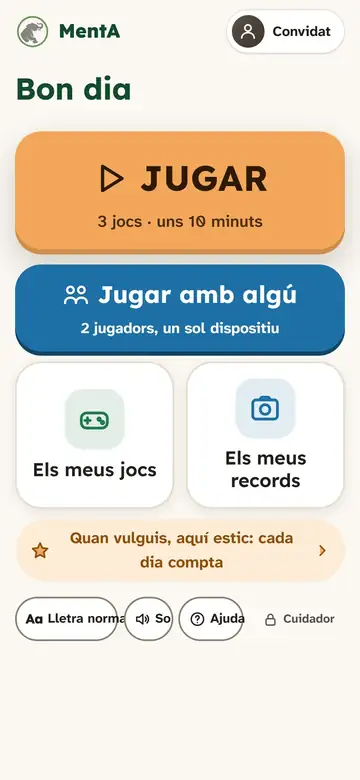
Jocs de memòria, atenció, llenguatge, càlcul i lògica. La persona gran comença amb un sol botó gran, JUGAR; qui la cuida té el seu espai a part.
En fase de proves: busquem persones que la provin.
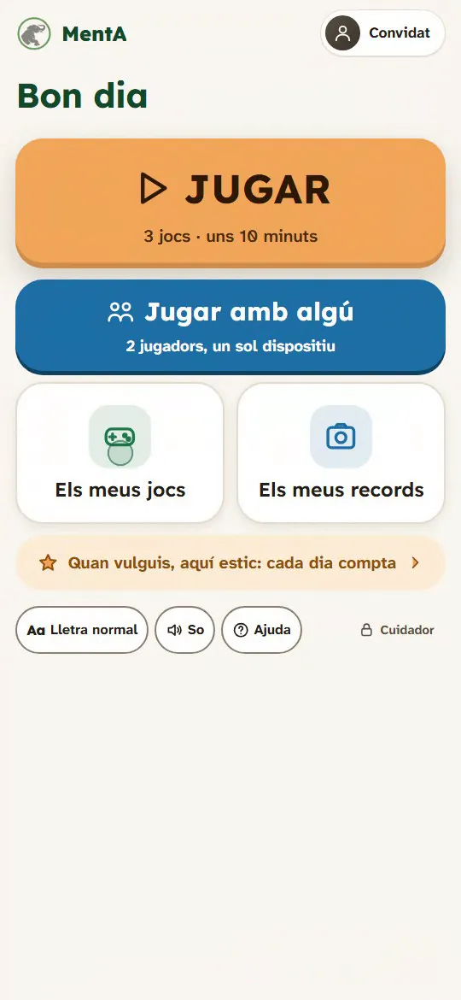
Bon dia
La persona gran obre l'app i veu el que cal: JUGAR. Sense registre ni contrasenyes. La primera vegada, una benvinguda breu l'ajuda a triar la mida de la lletra.

Bona tarda
17 jocs de 2 a 10 minuts. La dificultat s'adapta sola i la persona només veu reforç positiu. Entre joc i joc, un descans.
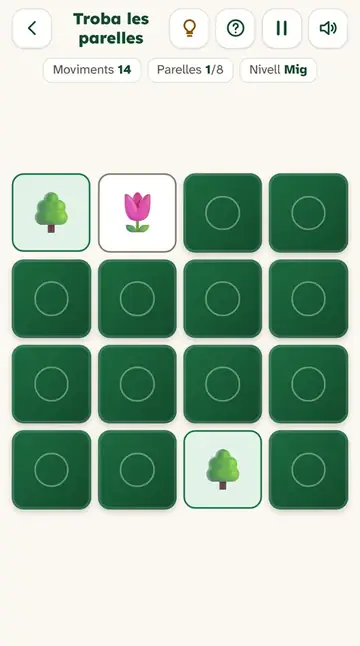
Quan visiten
«Jugar amb algú»: dues persones i un sol dispositiu, per torns. Un contra l'altre, junts o amb joc just, perquè cadascú jugui al seu nivell.
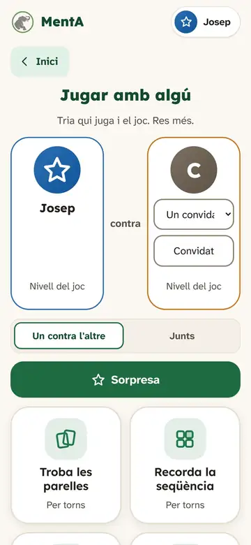
Bona nit
L'espai del cuidador és amb PIN: la persona gran no hi entra per error. Hi ha el resum, l'evolució i les notes. Tot és orientatiu, mai un diagnòstic.
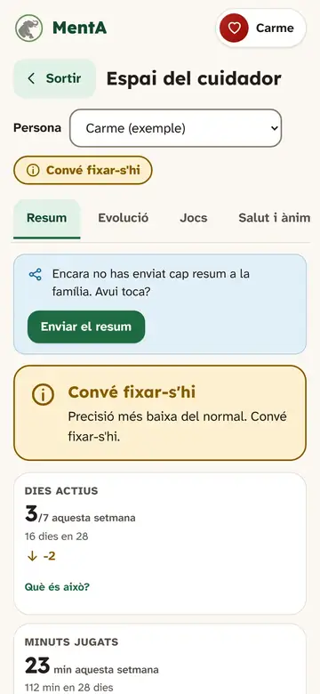
Aquesta és l'app de debò, en mode demostració: res del que facis es desa.
Captures reals de l'app, amb cada joc ja en marxa.
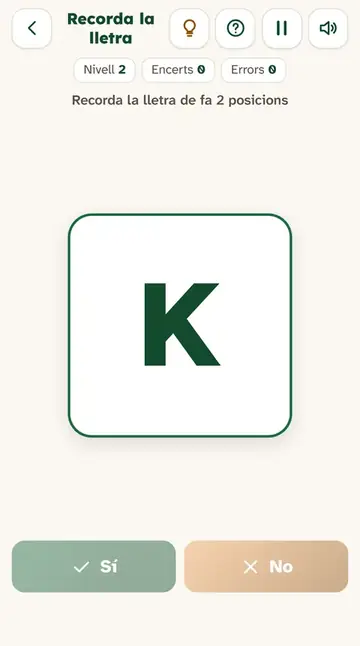
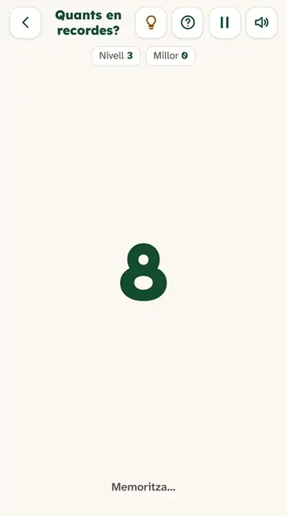
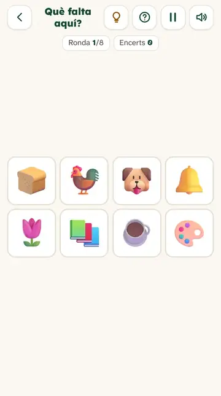
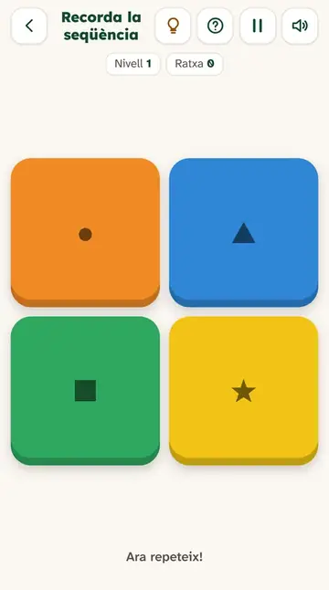
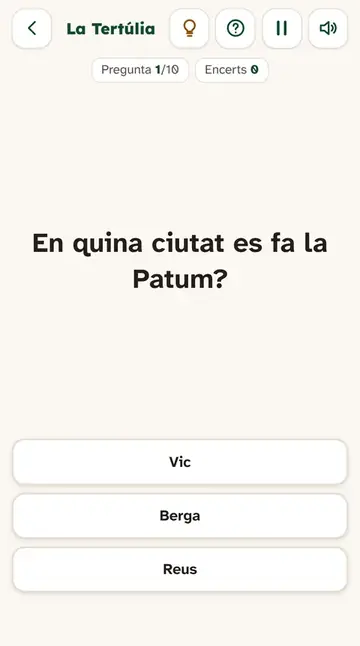
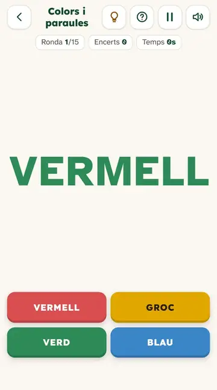
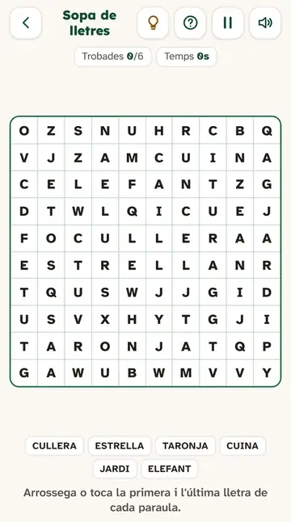
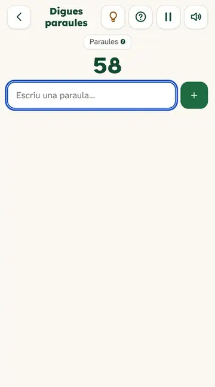
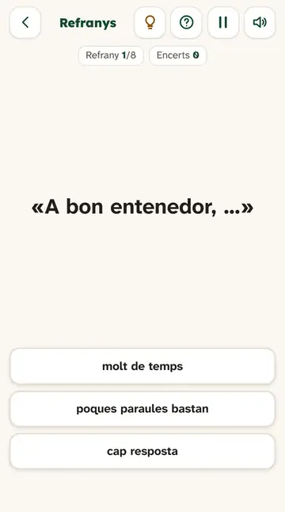
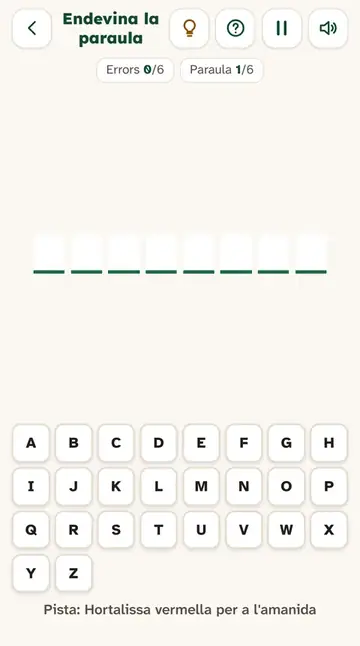
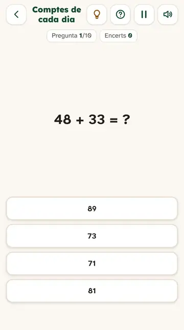
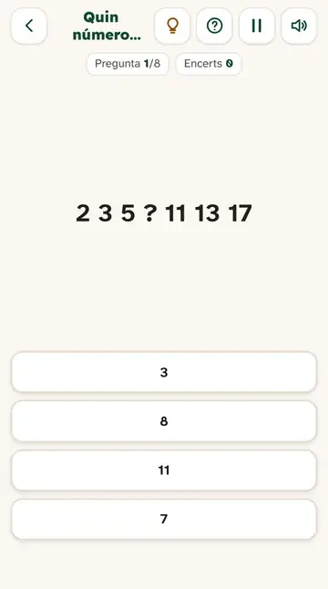
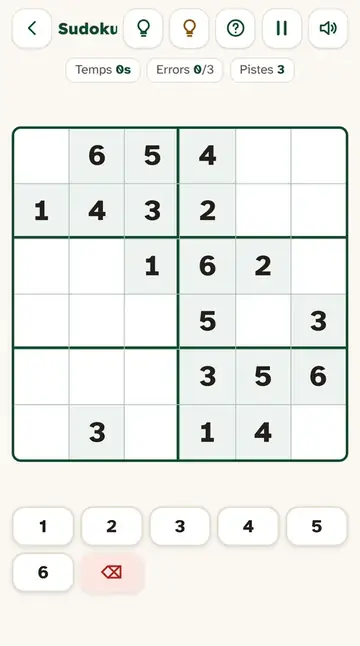
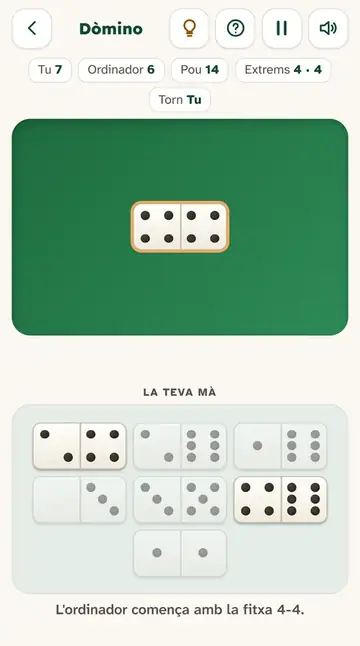
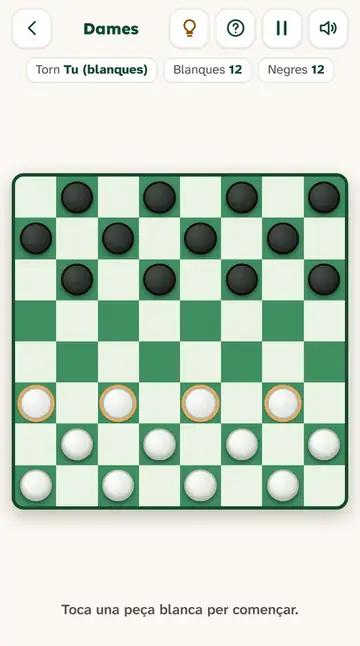
Bingo de 90 boles amb cartró de 3 files i 9 columnes, premi de línia i després bingo, i el taulell de l'1 al 90. Tu cantes LÍNIA! o BINGO! i l'app comprova que és veritat.
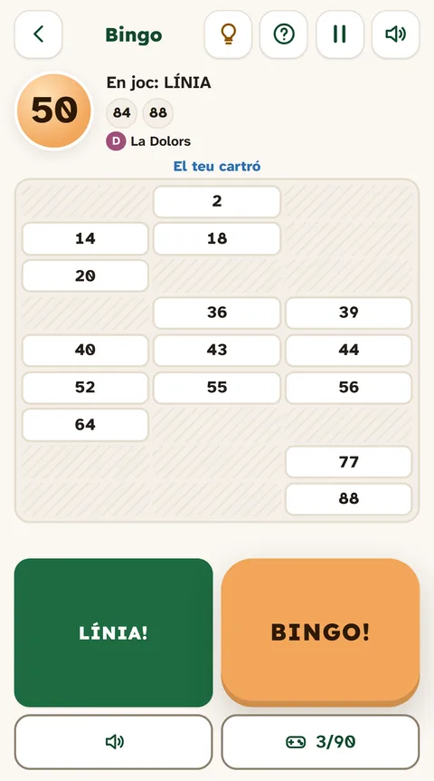
Quan el nét arriba a casa de l'àvia: dos tocs i ja juguen, sense escriure res. Un sol dispositiu, per torns.
Un espai amb PIN per veure com va cada persona. Tot és orientatiu, mai un diagnòstic.
Compara cada persona amb ella mateixa (les 4 setmanes anteriors), mai amb una norma. Només avisa si hi ha un canvi sostingut i prou dades. Les regles són visibles.
Visualització amb dades fictícies.
Gràfics amb notes: anota «avui estava cansada» i surt sobre el gràfic.
Dades fictícies.
La persona gran no hi entra per error. No és seguretat forta, i ho diem.
Informe de progrés en PDF per compartir amb qui vulguis, i exportació en CSV.
Una pantalla clara per demanar si la persona (o la família o tutor) hi està d'acord, i un registre de qui ha vist les dades.
Per a residències i centres de dia: cada resident toca la seva foto i juga amb el seu perfil, i el professional té una vista de tota la planta. Informes en PDF, exportació en CSV i mode quiosc a pantalla completa.
Captures amb dades fictícies de demostració: cap persona és real.
Si el vostre centre té interès a provar-la en un pilot, parlem-ne. Sense preus ni compromís: volem aprendre de com es fa servir de debò.
Demana una demo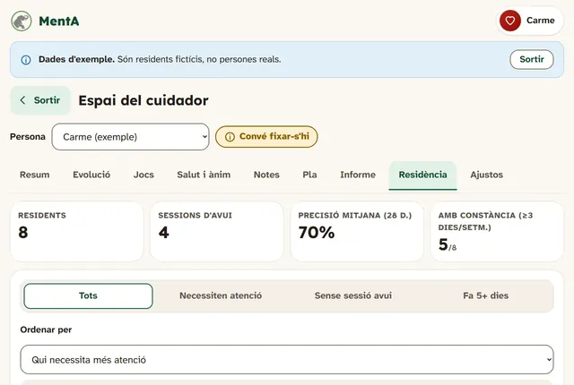
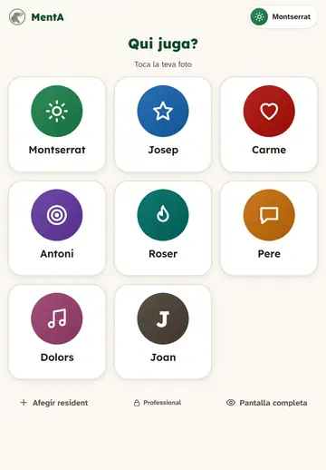
Això no és un diagnòstic. Els indicadors mesuren el rendiment en uns jocs, no la salut. MentA no és un dispositiu sanitari. Si observeu canvis que us preocupen, consulteu un professional de la salut.
MentA estimula, exercita i ajuda a mantenir-se actiu. El que mesurem és com es juga, i només en comparació amb la mateixa persona.
Les dades de salut són especialment sensibles: per això no surten del dispositiu si no ho decideix qui les gestiona.
MentA és gratuïta i no té publicitat.
No. Pots jugar com a convidat o crear perfils locals (un per a cada persona de casa) sense correu ni contrasenya.
Només al dispositiu. No hi ha servidor. Pots fer una còpia de seguretat i recuperar-la en un altre dispositiu.
Sí. Un cop oberta, funciona sense connexió. Si l'instal·les a la pantalla d'inici, s'obre com qualsevol altra app.
No. MentA és una eina d'entreteniment i benestar cognitiu. No és un dispositiu sanitari ni fa diagnòstics. Si us preocupa la memòria, consulteu un professional de la salut.
Android (Chrome): obre l'app i tria «Instal·la l'app». iPhone o iPad (Safari): botó «Comparteix» i «Afegeix a la pantalla d'inici». Ordinador: la icona d'instal·lació a la barra d'adreces. La instal·lació només funciona quan l'app està publicada amb un enllaç https.
És un projecte d'Empresa de la UPC (Castelldefels). Encara és una versió de proves: ens agradaria que la provessin persones grans i cuidadors reals i que ens diguessin què millorar.
MentA és un projecte d'Empresa de la UPC (Castelldefels). Encara no hi ha dades d'ús ni opinions publicades, i no n'inventem. Busquem persones grans i cuidadors que la provin, i residències que vulguin una demo.
Encara no tenim un correu públic. Mentrestant, pots enviar-nos el que en penses des de l'app.
Envia feedback des de l'app